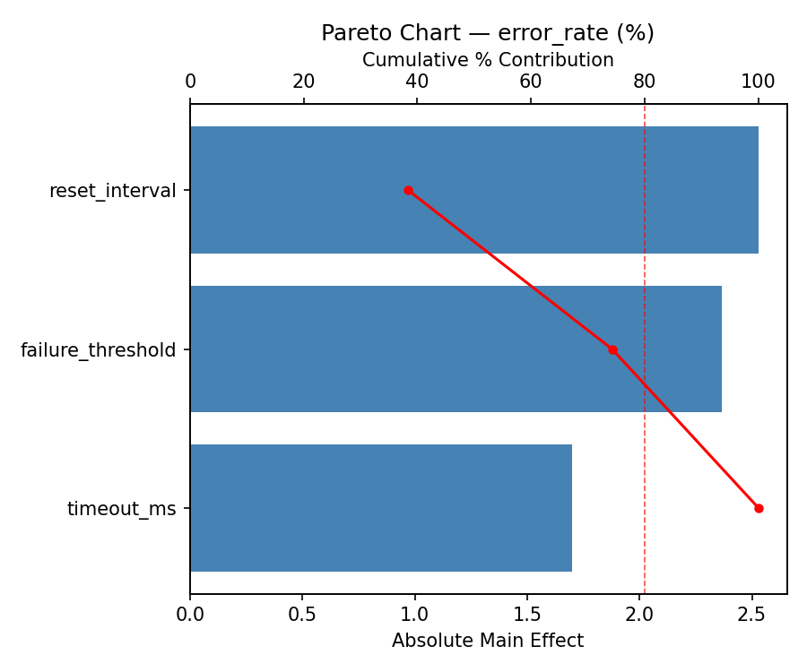
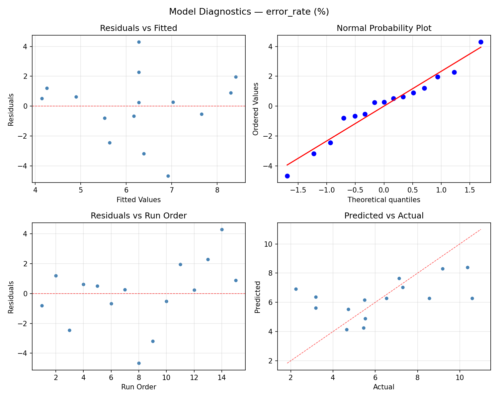
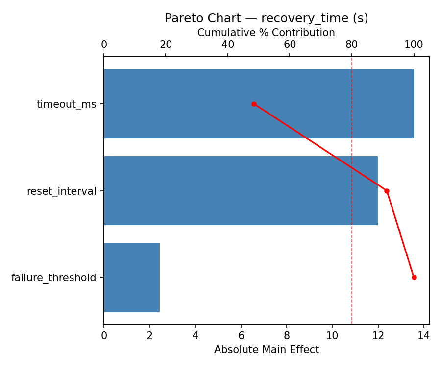
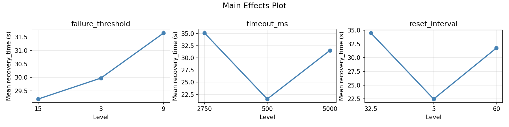
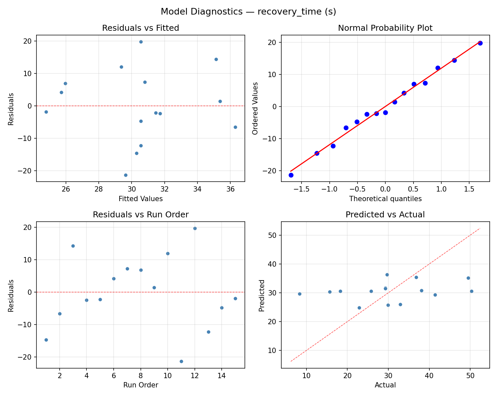
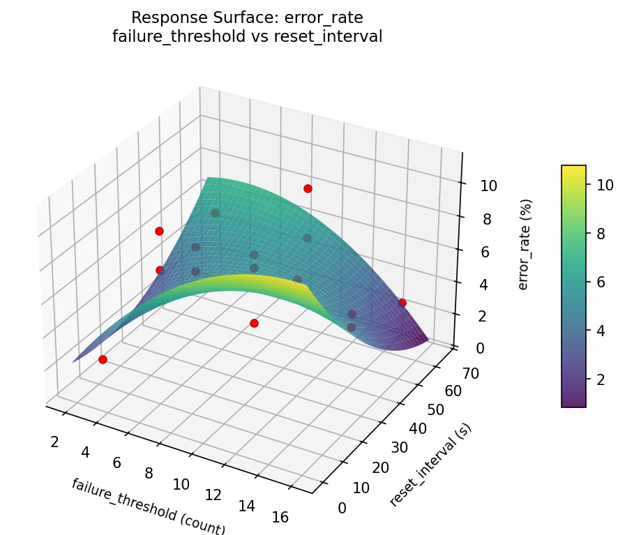
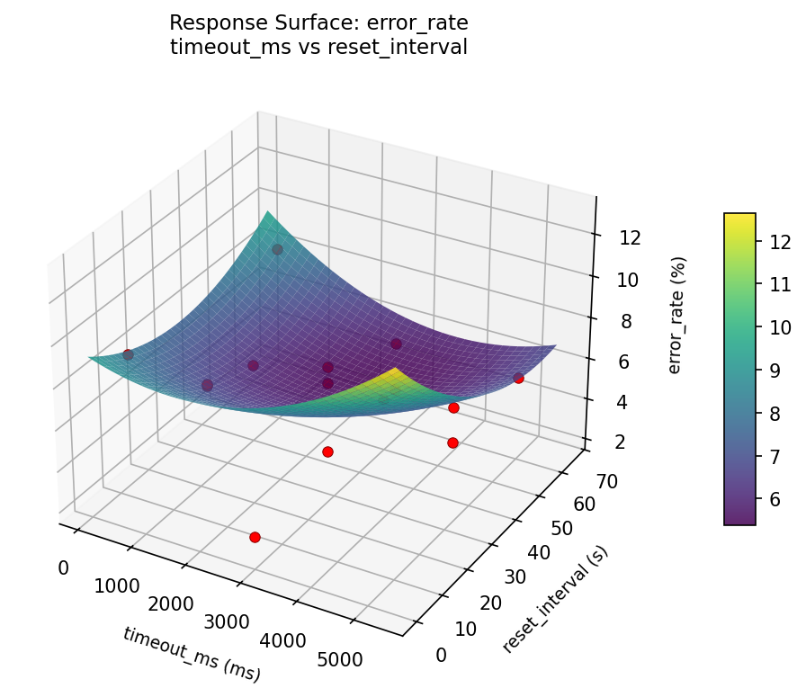
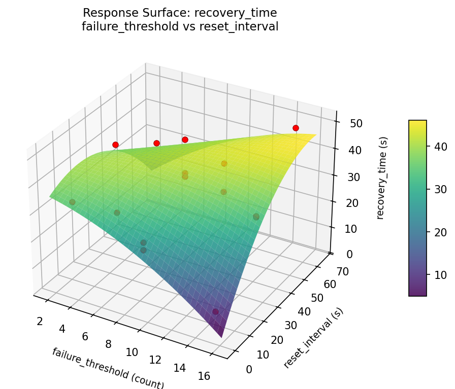
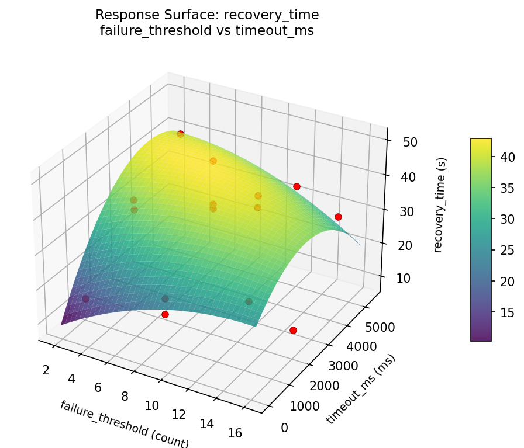
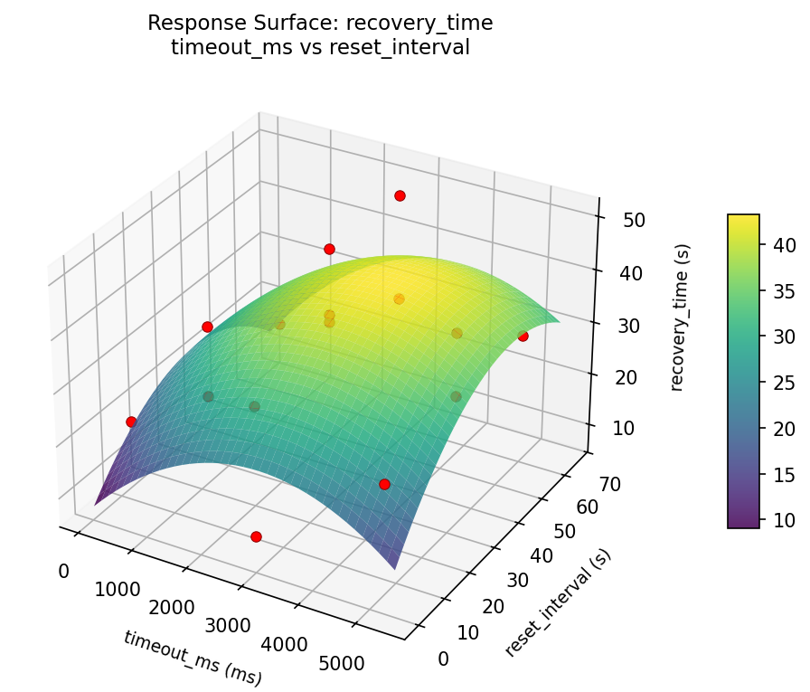

Summary
This experiment investigates microservice circuit breaker. Box-Behnken design to tune circuit breaker thresholds for error rate and recovery time.
The design varies 3 factors: failure threshold (count), ranging from 3 to 15, timeout ms (ms), ranging from 500 to 5000, and reset interval (s), ranging from 5 to 60. The goal is to optimize 2 responses: error rate (%) (minimize) and recovery time (s) (minimize). Fixed conditions held constant across all runs include backend pool size = 10, health check interval = 5.
A Box-Behnken design was chosen because it efficiently fits quadratic models with 3 continuous factors while avoiding extreme corner combinations — requiring only 15 runs instead of the 8 needed for a full factorial at two levels.
Quadratic response surface models were fitted to capture potential curvature and factor interactions. The RSM contour plots below visualize how pairs of factors jointly affect each response.
Key Findings
For error rate, the most influential factors were reset interval (54.9%), timeout ms (28.8%), failure threshold (16.3%). The best observed value was 2.25 (at failure threshold = 3, timeout ms = 500, reset interval = 32.5).
For recovery time, the most influential factors were timeout ms (41.7%), reset interval (34.1%), failure threshold (24.2%). The best observed value was 8.3 (at failure threshold = 9, timeout ms = 5000, reset interval = 5).
Recommended Next Steps
- Run confirmation experiments at the predicted optimal settings to validate the model.
- Consider whether any fixed factors should be varied in a future study.
Experimental Setup
Factors
| Factor | Low | High | Unit |
|---|
failure_threshold | 3 | 15 | count |
timeout_ms | 500 | 5000 | ms |
reset_interval | 5 | 60 | s |
Fixed: backend_pool_size = 10, health_check_interval = 5
Responses
| Response | Direction | Unit |
|---|
error_rate | ↓ minimize | % |
recovery_time | ↓ minimize | s |
Configuration
{
"metadata": {
"name": "Microservice Circuit Breaker",
"description": "Box-Behnken design to tune circuit breaker thresholds for error rate and recovery time"
},
"factors": [
{
"name": "failure_threshold",
"levels": [
"3",
"15"
],
"type": "continuous",
"unit": "count"
},
{
"name": "timeout_ms",
"levels": [
"500",
"5000"
],
"type": "continuous",
"unit": "ms"
},
{
"name": "reset_interval",
"levels": [
"5",
"60"
],
"type": "continuous",
"unit": "s"
}
],
"fixed_factors": {
"backend_pool_size": "10",
"health_check_interval": "5"
},
"responses": [
{
"name": "error_rate",
"optimize": "minimize",
"unit": "%"
},
{
"name": "recovery_time",
"optimize": "minimize",
"unit": "s"
}
],
"settings": {
"operation": "box_behnken",
"test_script": "use_cases/28_microservice_circuit_breaker/sim.sh"
}
}
Experimental Matrix
The Box-Behnken Design produces 15 runs. Each row is one experiment with specific factor settings.
| Run | failure_threshold | timeout_ms | reset_interval |
|---|
| 1 | 9 | 500 | 5 |
| 2 | 9 | 2750 | 32.5 |
| 3 | 15 | 2750 | 60 |
| 4 | 15 | 2750 | 5 |
| 5 | 9 | 2750 | 32.5 |
| 6 | 9 | 2750 | 32.5 |
| 7 | 3 | 2750 | 60 |
| 8 | 15 | 500 | 32.5 |
| 9 | 9 | 500 | 60 |
| 10 | 15 | 5000 | 32.5 |
| 11 | 3 | 2750 | 5 |
| 12 | 9 | 5000 | 60 |
| 13 | 3 | 500 | 32.5 |
| 14 | 3 | 5000 | 32.5 |
| 15 | 9 | 5000 | 5 |
Step-by-Step Workflow
1
Preview the design
$ doe info --config use_cases/28_microservice_circuit_breaker/config.json
2
Generate the runner script
$ doe generate --config use_cases/28_microservice_circuit_breaker/config.json \
--output use_cases/28_microservice_circuit_breaker/results/run.sh --seed 42
3
Execute the experiments
$ bash use_cases/28_microservice_circuit_breaker/results/run.sh
4
Analyze results
$ doe analyze --config use_cases/28_microservice_circuit_breaker/config.json
5
Get optimization recommendations
$ doe optimize --config use_cases/28_microservice_circuit_breaker/config.json
6
Multi-objective optimization
With 2 competing responses, use --multi to find the best compromise via Derringer–Suich desirability.
$ doe optimize --config use_cases/28_microservice_circuit_breaker/config.json --multi
7
Generate the HTML report
$ doe report --config use_cases/28_microservice_circuit_breaker/config.json \
--output use_cases/28_microservice_circuit_breaker/results/report.html
Features Exercised
| Feature | Value |
|---|
| Design type | box_behnken |
| Factor types | continuous (all 3) |
| Arg style | double-dash |
| Responses | 2 (error_rate ↓, recovery_time ↓) |
| Total runs | 15 |
Analysis Results
Generated from actual experiment runs using the DOE Helper Tool.
Response: error_rate
Top factors: reset_interval (54.9%), timeout_ms (28.8%), failure_threshold (16.3%).
ANOVA
| Source | DF | SS | MS | F | p-value |
|---|
| Source | DF | SS | MS | F | p-value |
| failure_threshold | 2 | 1.8599 | 0.9299 | 0.698 | 0.5257 |
| timeout_ms | 2 | 6.8375 | 3.4187 | 2.565 | 0.1378 |
| reset_interval | 2 | 25.9731 | 12.9865 | 9.743 | 0.0072 |
| Lack | of | Fit | 6 | 55.6917 | 9.2819 |
| Pure | Error | 2 | 2.6659 | | |
| Error | 8 | 58.3576 | 1.3329 | | |
| Total | 14 | 93.0280 | 6.6449 | | |
Pareto Chart

Main Effects Plot

Normal Probability Plot of Effects

Half-Normal Plot of Effects

Model Diagnostics

Response: recovery_time
Top factors: timeout_ms (41.7%), reset_interval (34.1%), failure_threshold (24.2%).
ANOVA
| Source | DF | SS | MS | F | p-value |
|---|
| Source | DF | SS | MS | F | p-value |
| failure_threshold | 2 | 72.0898 | 36.0449 | 0.313 | 0.7400 |
| timeout_ms | 2 | 236.2452 | 118.1226 | 1.025 | 0.4016 |
| reset_interval | 2 | 147.0113 | 73.5056 | 0.638 | 0.5534 |
| Lack | of | Fit | 6 | 1233.5910 | 205.5985 |
| Pure | Error | 2 | 230.5400 | | |
| Error | 8 | 1464.1310 | 115.2700 | | |
| Total | 14 | 1919.4773 | 137.1055 | | |
Pareto Chart

Main Effects Plot

Normal Probability Plot of Effects

Half-Normal Plot of Effects

Model Diagnostics

Response Surface Plots
3D surfaces fitted with quadratic RSM. Red dots are observed data points.
error rate failure threshold vs reset interval

error rate failure threshold vs timeout ms

error rate timeout ms vs reset interval

recovery time failure threshold vs reset interval

recovery time failure threshold vs timeout ms

recovery time timeout ms vs reset interval

Multi-Objective Optimization
When responses compete, Derringer–Suich desirability finds the best compromise.
Each response is scaled to a 0–1 desirability, then combined via a weighted geometric mean.
Overall Desirability
D = 0.7261
Per-Response Desirability
| Response | Weight | Desirability | Predicted | Dir |
|---|
error_rate |
1.5 |
|
4.73 0.6839 4.73 % |
↓ |
recovery_time |
1.0 |
|
15.70 0.7944 15.70 s |
↓ |
Recommended Settings
| Factor | Value |
|---|
failure_threshold | 3 count |
timeout_ms | 2750 ms |
reset_interval | 5 s |
Source: from observed run #1
Trade-off Summary
Sacrifice = how much worse than single-objective best.
| Response | Predicted | Best Observed | Sacrifice |
|---|
recovery_time | 15.70 | 8.30 | +7.40 |
Top 3 Runs by Desirability
| Run | D | Factor Settings |
|---|
| #8 | 0.6887 | failure_threshold=9, timeout_ms=500, reset_interval=60 |
| #5 | 0.6080 | failure_threshold=3, timeout_ms=5000, reset_interval=32.5 |
Model Quality
| Response | R² | Type |
|---|
recovery_time | 0.2543 | linear |
Full Multi-Objective Output
============================================================
MULTI-OBJECTIVE OPTIMIZATION
Method: Derringer-Suich Desirability Function
============================================================
Overall desirability: D = 0.7261
Response Weight Desirability Predicted Direction
---------------------------------------------------------------------
error_rate 1.5 0.6839 4.73 % ↓
recovery_time 1.0 0.7944 15.70 s ↓
Recommended settings:
failure_threshold = 3 count
timeout_ms = 2750 ms
reset_interval = 5 s
(from observed run #1)
Trade-off summary:
error_rate: 4.73 (best observed: 2.25, sacrifice: +2.48)
recovery_time: 15.70 (best observed: 8.30, sacrifice: +7.40)
Model quality:
error_rate: R² = 0.1813 (linear)
recovery_time: R² = 0.2543 (linear)
Top 3 observed runs by overall desirability:
1. Run #1 (D=0.7261): failure_threshold=3, timeout_ms=2750, reset_interval=5
2. Run #8 (D=0.6887): failure_threshold=9, timeout_ms=500, reset_interval=60
3. Run #5 (D=0.6080): failure_threshold=3, timeout_ms=5000, reset_interval=32.5
Full Analysis Output
=== Main Effects: error_rate ===
Factor Effect Std Error % Contribution
--------------------------------------------------------------
reset_interval 3.0850 0.6656 54.9%
timeout_ms 1.6186 0.6656 28.8%
failure_threshold 0.9150 0.6656 16.3%
=== ANOVA Table: error_rate ===
Source DF SS MS F p-value
-----------------------------------------------------------------------------
failure_threshold 2 1.8599 0.9299 0.698 0.5257
timeout_ms 2 6.8375 3.4187 2.565 0.1378
reset_interval 2 25.9731 12.9865 9.743 0.0072
Lack of Fit 6 55.6917 9.2819 6.964 0.1309
Pure Error 2 2.6659 1.3329
Error 8 58.3576 1.3329
Total 14 93.0280 6.6449
=== Summary Statistics: error_rate ===
failure_threshold:
Level N Mean Std Min Max
------------------------------------------------------------
15 4 5.9225 2.4491 3.1800 8.5600
3 4 6.8375 1.7434 5.5000 9.1900
9 7 6.1571 3.2674 2.2500 10.5800
timeout_ms:
Level N Mean Std Min Max
------------------------------------------------------------
2750 7 5.7514 1.7365 3.1900 8.5600
500 4 7.3700 3.2598 3.1800 10.5800
5000 4 6.1000 3.4746 2.2500 10.3700
reset_interval:
Level N Mean Std Min Max
------------------------------------------------------------
32.5 7 5.3600 2.1669 3.1800 9.1900
5 4 5.7100 2.6338 2.2500 8.5600
60 4 8.4450 2.4544 5.5300 10.5800
=== Main Effects: recovery_time ===
Factor Effect Std Error % Contribution
--------------------------------------------------------------
timeout_ms 9.1500 3.0233 41.7%
reset_interval 7.4750 3.0233 34.1%
failure_threshold 5.3000 3.0233 24.2%
=== ANOVA Table: recovery_time ===
Source DF SS MS F p-value
-----------------------------------------------------------------------------
failure_threshold 2 72.0898 36.0449 0.313 0.7400
timeout_ms 2 236.2452 118.1226 1.025 0.4016
reset_interval 2 147.0113 73.5056 0.638 0.5534
Lack of Fit 6 1233.5910 205.5985 1.784 0.4019
Pure Error 2 230.5400 115.2700
Error 8 1464.1310 115.2700
Total 14 1919.4773 137.1055
=== Summary Statistics: recovery_time ===
failure_threshold:
Level N Mean Std Min Max
------------------------------------------------------------
15 4 33.8000 13.2348 18.3000 49.5000
3 4 30.8750 7.6986 22.9000 41.4000
9 7 28.5000 13.8088 8.3000 50.3000
timeout_ms:
Level N Mean Std Min Max
------------------------------------------------------------
2750 7 28.2571 8.4908 15.7000 38.1000
500 4 37.1250 14.8023 22.9000 50.3000
5000 4 27.9750 14.0635 8.3000 41.4000
reset_interval:
Level N Mean Std Min Max
------------------------------------------------------------
32.5 7 32.1857 11.3907 15.7000 49.5000
5 4 32.8500 13.2276 18.3000 50.3000
60 4 25.3750 12.5042 8.3000 38.1000
Optimization Recommendations
=== Optimization: error_rate ===
Direction: minimize
Best observed run: #8
failure_threshold = 3
timeout_ms = 500
reset_interval = 32.5
Value: 2.25
RSM Model (linear, R² = 0.4898, Adj R² = 0.3507):
Coefficients:
intercept +6.2760
failure_threshold +1.5100
timeout_ms +0.9250
reset_interval -1.6000
RSM Model (quadratic, R² = 0.7502, Adj R² = 0.3006):
Coefficients:
intercept +8.0800
failure_threshold +1.5100
timeout_ms +0.9250
reset_interval -1.6000
failure_threshold*timeout_ms +0.5250
failure_threshold*reset_interval -0.4300
timeout_ms*reset_interval +0.2700
failure_threshold^2 -2.3525
timeout_ms^2 -0.8475
reset_interval^2 -0.1825
Curvature analysis:
failure_threshold coef=-2.3525 concave (has a maximum)
timeout_ms coef=-0.8475 concave (has a maximum)
reset_interval coef=-0.1825 concave (has a maximum)
Notable interactions:
failure_threshold*timeout_ms coef=+0.5250 (synergistic)
failure_threshold*reset_interval coef=-0.4300 (antagonistic)
Predicted optimum (from linear model, at observed points):
failure_threshold = 15
timeout_ms = 2750
reset_interval = 5
Predicted value: 9.3860
Surface optimum (via L-BFGS-B, linear model):
failure_threshold = 3
timeout_ms = 500
reset_interval = 60
Predicted value: 2.2410
Model quality: Weak fit — consider adding center points or using a different design.
Factor importance:
1. failure_threshold (effect: 3.8, contribution: 42.9%)
2. reset_interval (effect: 3.2, contribution: 36.2%)
3. timeout_ms (effect: 1.8, contribution: 20.9%)
=== Optimization: recovery_time ===
Direction: minimize
Best observed run: #11
failure_threshold = 9
timeout_ms = 5000
reset_interval = 5
Value: 8.3
RSM Model (linear, R² = 0.1338, Adj R² = -0.1024):
Coefficients:
intercept +30.5467
failure_threshold -1.4750
timeout_ms -2.0125
reset_interval +5.0875
RSM Model (quadratic, R² = 0.5154, Adj R² = -0.3568):
Coefficients:
intercept +39.1667
failure_threshold -1.4750
timeout_ms -2.0125
reset_interval +5.0875
failure_threshold*timeout_ms -6.9000
failure_threshold*reset_interval -5.4500
timeout_ms*reset_interval +1.8750
failure_threshold^2 -1.4208
timeout_ms^2 -5.2458
reset_interval^2 -9.4958
Curvature analysis:
reset_interval coef=-9.4958 concave (has a maximum)
timeout_ms coef=-5.2458 concave (has a maximum)
failure_threshold coef=-1.4208 concave (has a maximum)
Notable interactions:
failure_threshold*timeout_ms coef=-6.9000 (antagonistic)
failure_threshold*reset_interval coef=-5.4500 (antagonistic)
timeout_ms*reset_interval coef=+1.8750 (synergistic)
Predicted optimum (from linear model, at observed points):
failure_threshold = 9
timeout_ms = 500
reset_interval = 60
Predicted value: 37.6467
Surface optimum (via L-BFGS-B, linear model):
failure_threshold = 15
timeout_ms = 5000
reset_interval = 5
Predicted value: 21.9717
Model quality: Weak fit — consider adding center points or using a different design.
Factor importance:
1. reset_interval (effect: 14.1, contribution: 59.9%)
2. timeout_ms (effect: 6.5, contribution: 27.5%)
3. failure_threshold (effect: 3.0, contribution: 12.5%)